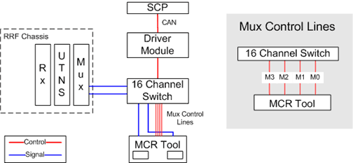

Proprietary to General Electric Company
Direction 5440000, Rev# 5
Signa HDxt Service Methods
Module Version 1.0, Version Date 4/26/07
Proprietary to General Electric Company |
Diagnostics >> RRF Chassis >> Coil Mux Control Lines Functional Diagnostic (16)
Diagnostics >> RRF Chassis >> Coil Mux Control Lines Functional Diagnostic (32)
The purpose of the Coil Mux Control Lines Functional Diagnostic is to verify that each of four mux control lines to the LPCA is functioning properly. This diagnostic is only available for systems that have an LPCA without a Legacy port.
The diagnostic, which requires the MCR 3 tool, performs four tests. The MCR 3 tool provides the oscillator signal used to verify the mux control lines. However, unlike the oscillator on the MCR 2 tool, simply turning on any of the mux control lines does not turn on the MCR 3 tool’s oscillator.
Four (4) Mux control lines to the LPCA
MCR 3 tool
Illustration 1: Coil Mux Control Lines Functional Block Diagram

Insert the MCR 3 Tool into one of the ports.
From the diagnostic page, make the appropriate port(s) selection.
Click [Run].
Follow the instructions provided by the diagnostic’s pop-up messages.
Repeat test for each LPCA port.
Examine the results from the first test, LPCA Mux Cntrl x M2/M3 Open
If all the channels have dead channels:
If all the channels failed the low signal validation too, then Mux control lines 2 and/or 3 have an open cicuit
If all the channels passed the low signal validation, then Mux control lines 0 or 1 are shorted to lines 2 or 3
Do not proceed with analyzing other test results
If all the channels are greater than the noise measurements, then Mux control lines 2 and 3 are ok.
Examine the results from the second test, LPCA Mux Cntrl x M2/M3 Short
If all channels have excessive signal errors, then Mux control lines 2 and 3 are shorted together.
Do not proceed with analyzing other test results
Examine the results from the third test, LPCA Mux Cntrl x M0
If all the channels have excessive signal errors:
Mux control line M0 is open, or
M1 is shorted to M2 and/or M3
Examine the results from the fourth test, LPCA Mux Cntrl x M1
If all the channels have excessive signal errors:
Mux control line M1 is open, or
M0 is shorted to M2 and/or M3
Mixed channel results are outside the scope of this diagnostic. If at any point some of the channels pass while others indicate and error, run the MCR diagnostic.